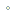
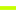

<!doctype html>
<html lang="en">
    <head>
        <meta charset="utf-8">
        <meta http-equiv="X-UA-Compatible" content="IE=edge">
        <meta name="viewport" content="initial-scale=1,user-scalable=no,maximum-scale=1,width=device-width">
        <meta name="mobile-web-app-capable" content="yes">
        <meta name="apple-mobile-web-app-capable" content="yes">
        <link rel="stylesheet" href="css/leaflet.css">
        <link rel="stylesheet" href="css/L.Control.Layers.Tree.css">
        <link rel="stylesheet" href="css/qgis2web.css">
        <link rel="stylesheet" href="css/fontawesome-all.min.css">
        <link rel="stylesheet" href="css/MarkerCluster.css">
        <link rel="stylesheet" href="css/MarkerCluster.Default.css">
        <link rel="stylesheet" href="css/leaflet.photon.css">
        <link rel="stylesheet" href="css/leaflet-measure.css">
        <style>
        html, body, #map {
            width: 100%;
            height: 100%;
            padding: 0;
            margin: 0;
        }
        </style>
        <title>Route Preview</title>
    </head>
    <body>
        <div id="map">
        </div>
        <script src="js/qgis2web_expressions.js"></script>
        <script src="js/leaflet.js"></script>
        <script src="js/L.Control.Layers.Tree.min.js"></script>
        <script src="js/leaflet-svg-shape-markers.min.js"></script>
        <script src="js/leaflet.rotatedMarker.js"></script>
        <script src="js/leaflet.pattern.js"></script>
        <script src="js/leaflet-hash.js"></script>
        <script src="js/Autolinker.min.js"></script>
        <script src="js/rbush.min.js"></script>
        <script src="js/labelgun.min.js"></script>
        <script src="js/labels.js"></script>
        <script src="js/leaflet.photon.js"></script>
        <script src="js/leaflet-measure.js"></script>
        <script src="js/leaflet.markercluster.js"></script>
        <script src="data/Backgroundgelap_1.js"></script>
        <script src="data/GPXDoksli_2.js"></script>
        <script src="data/GPXSurveyed_3.js"></script>
        <script src="data/Jarak_4.js"></script>
        <script src="data/poi_5.js"></script>
        <script>
        var map = L.map('map', {
            zoomControl:false, maxZoom:18, minZoom:12
        }).fitBounds([[-6.575036697387949,106.60137695717732],[-6.47558443272364,106.7177427204691]]);
        var hash = new L.Hash(map);
        map.attributionControl.setPrefix('<a href="https://github.com/tomchadwin/qgis2web" target="_blank">qgis2web</a> &middot; <a href="https://leafletjs.com" title="A JS library for interactive maps">Leaflet</a> &middot; <a href="https://qgis.org">QGIS</a>');
        var autolinker = new Autolinker({truncate: {length: 30, location: 'smart'}});
        // remove popup's row if "visible-with-data"
        function removeEmptyRowsFromPopupContent(content, feature) {
         var tempDiv = document.createElement('div');
         tempDiv.innerHTML = content;
         var rows = tempDiv.querySelectorAll('tr');
         for (var i = 0; i < rows.length; i++) {
             var td = rows[i].querySelector('td.visible-with-data');
             var key = td ? td.id : '';
             if (td && td.classList.contains('visible-with-data') && feature.properties[key] == null) {
                 rows[i].parentNode.removeChild(rows[i]);
             }
         }
         return tempDiv.innerHTML;
        }
        // modify popup if contains media
        function addClassToPopupIfMedia(content, popup) {
            var tempDiv = document.createElement('div');
            tempDiv.innerHTML = content;
            var imgTd = tempDiv.querySelector('td img');
            if (imgTd) {
                var src = imgTd.getAttribute('src');
                if (/\.(jpg|jpeg|png|gif|bmp|webp|avif)$/i.test(src)) {
                    popup._contentNode.classList.add('media');
                    setTimeout(function() {
                        popup.update();
                    }, 10);
                } else if (/\.(mp3|wav|ogg|aac)$/i.test(src)) {
                    var audio = document.createElement('audio');
                    audio.controls = true;
                    audio.src = src;
                    imgTd.parentNode.replaceChild(audio, imgTd);
                    popup._contentNode.classList.add('media');
                    setTimeout(function() {
                        popup.setContent(tempDiv.innerHTML);
                        popup.update();
                    }, 10);
                } else if (/\.(mp4|webm|ogg|mov)$/i.test(src)) {
                    var video = document.createElement('video');
                    video.controls = true;
                    video.src = src;
                    video.style.width = "400px";
                    video.style.height = "300px";
                    video.style.maxHeight = "60vh";
                    video.style.maxWidth = "60vw";
                    imgTd.parentNode.replaceChild(video, imgTd);
                    popup._contentNode.classList.add('media');
                    // Aggiorna il popup quando il video carica i metadati
                    video.addEventListener('loadedmetadata', function() {
                        popup.update();
                    });
                    setTimeout(function() {
                        popup.setContent(tempDiv.innerHTML);
                        popup.update();
                    }, 10);
                } else {
                    popup._contentNode.classList.remove('media');
                }
            } else {
                popup._contentNode.classList.remove('media');
            }
        }
        var title = new L.Control({'position':'topleft'});
        title.onAdd = function (map) {
            this._div = L.DomUtil.create('div', 'info');
            this.update();
            return this._div;
        };
        title.update = function () {
            this._div.innerHTML = '<h2>Route Preview</h2>';
        };
        title.addTo(map);
        var zoomControl = L.control.zoom({
            position: 'topleft'
        }).addTo(map);
        var measureControl = new L.Control.Measure({
            position: 'topleft',
            primaryLengthUnit: 'meters',
            secondaryLengthUnit: 'kilometers',
            primaryAreaUnit: 'sqmeters',
            secondaryAreaUnit: 'hectares'
        });
        measureControl.addTo(map);
        document.getElementsByClassName('leaflet-control-measure-toggle')[0].innerHTML = '';
        document.getElementsByClassName('leaflet-control-measure-toggle')[0].className += ' fas fa-ruler';
        var bounds_group = new L.featureGroup([]);
        function setBounds() {
        }
        map.createPane('pane_EsriSatellite_0');
        map.getPane('pane_EsriSatellite_0').style.zIndex = 400;
        var layer_EsriSatellite_0 = L.tileLayer('https://server.arcgisonline.com/ArcGIS/rest/services/World_Imagery/MapServer/tile/{z}/{y}/{x}', {
            pane: 'pane_EsriSatellite_0',
            opacity: 1.0,
            attribution: '',
            minZoom: 12,
            maxZoom: 18,
            minNativeZoom: 0,
            maxNativeZoom: 22
        });
        layer_EsriSatellite_0;
        map.addLayer(layer_EsriSatellite_0);
        function pop_Backgroundgelap_1(feature, layer) {
        }

        function style_Backgroundgelap_1_0() {
            return {
                pane: 'pane_Backgroundgelap_1',
                stroke: false, 
                fill: true,
                fillOpacity: 1,
                fillColor: 'rgba(0,0,0,0.4)',
                interactive: true,
            }
        }
        map.createPane('pane_Backgroundgelap_1');
        map.getPane('pane_Backgroundgelap_1').style.zIndex = 401;
        map.getPane('pane_Backgroundgelap_1').style['mix-blend-mode'] = 'normal';
        var layer_Backgroundgelap_1 = new L.geoJson(json_Backgroundgelap_1, {
            attribution: '',
            interactive: true,
            dataVar: 'json_Backgroundgelap_1',
            layerName: 'layer_Backgroundgelap_1',
            pane: 'pane_Backgroundgelap_1',
            onEachFeature: pop_Backgroundgelap_1,
            style: style_Backgroundgelap_1_0,
        });
        bounds_group.addLayer(layer_Backgroundgelap_1);
        map.addLayer(layer_Backgroundgelap_1);
        function pop_GPXDoksli_2(feature, layer) {
            var popupContent = '<table>\
                    <tr>\
                        <td colspan="2">' + (feature.properties['cmt'] !== null ? autolinker.link(String(feature.properties['cmt']).replace(/'/g, '\'').toLocaleString()) : '') + '</td>\
                    </tr>\
                    <tr>\
                        <td colspan="2">' + (feature.properties['desc'] !== null ? autolinker.link(String(feature.properties['desc']).replace(/'/g, '\'').toLocaleString()) : '') + '</td>\
                    </tr>\
                    <tr>\
                        <td colspan="2">' + (feature.properties['src'] !== null ? autolinker.link(String(feature.properties['src']).replace(/'/g, '\'').toLocaleString()) : '') + '</td>\
                    </tr>\
                    <tr>\
                        <td colspan="2">' + (feature.properties['link1_href'] !== null ? autolinker.link(String(feature.properties['link1_href']).replace(/'/g, '\'').toLocaleString()) : '') + '</td>\
                    </tr>\
                    <tr>\
                        <td colspan="2">' + (feature.properties['link1_text'] !== null ? autolinker.link(String(feature.properties['link1_text']).replace(/'/g, '\'').toLocaleString()) : '') + '</td>\
                    </tr>\
                    <tr>\
                        <td colspan="2">' + (feature.properties['link1_type'] !== null ? autolinker.link(String(feature.properties['link1_type']).replace(/'/g, '\'').toLocaleString()) : '') + '</td>\
                    </tr>\
                    <tr>\
                        <td colspan="2">' + (feature.properties['link2_href'] !== null ? autolinker.link(String(feature.properties['link2_href']).replace(/'/g, '\'').toLocaleString()) : '') + '</td>\
                    </tr>\
                    <tr>\
                        <td colspan="2">' + (feature.properties['link2_text'] !== null ? autolinker.link(String(feature.properties['link2_text']).replace(/'/g, '\'').toLocaleString()) : '') + '</td>\
                    </tr>\
                    <tr>\
                        <td colspan="2">' + (feature.properties['link2_type'] !== null ? autolinker.link(String(feature.properties['link2_type']).replace(/'/g, '\'').toLocaleString()) : '') + '</td>\
                    </tr>\
                    <tr>\
                        <td colspan="2">' + (feature.properties['number'] !== null ? autolinker.link(String(feature.properties['number']).replace(/'/g, '\'').toLocaleString()) : '') + '</td>\
                    </tr>\
                    <tr>\
                        <td colspan="2">' + (feature.properties['type'] !== null ? autolinker.link(String(feature.properties['type']).replace(/'/g, '\'').toLocaleString()) : '') + '</td>\
                    </tr>\
                </table>';
            var content = removeEmptyRowsFromPopupContent(popupContent, feature);
			layer.on('popupopen', function(e) {
				addClassToPopupIfMedia(content, e.popup);
			});
			layer.bindPopup(content, { maxHeight: 400 });
        }

        function style_GPXDoksli_2_0() {
            return {
                pane: 'pane_GPXDoksli_2',
                opacity: 1,
                color: 'rgba(198,255,0,1.0)',
                dashArray: '',
                lineCap: 'round',
                lineJoin: 'round',
                weight: 4.0,
                fillOpacity: 0,
                interactive: false,
            }
        }
        map.createPane('pane_GPXDoksli_2');
        map.getPane('pane_GPXDoksli_2').style.zIndex = 402;
        map.getPane('pane_GPXDoksli_2').style['mix-blend-mode'] = 'normal';
        var layer_GPXDoksli_2 = new L.geoJson(json_GPXDoksli_2, {
            attribution: '',
            interactive: false,
            dataVar: 'json_GPXDoksli_2',
            layerName: 'layer_GPXDoksli_2',
            pane: 'pane_GPXDoksli_2',
            onEachFeature: pop_GPXDoksli_2,
            style: style_GPXDoksli_2_0,
        });
        bounds_group.addLayer(layer_GPXDoksli_2);
        map.addLayer(layer_GPXDoksli_2);
        function pop_GPXSurveyed_3(feature, layer) {
            var popupContent = '<table>\
                    <tr>\
                        <td colspan="2">' + (feature.properties['cmt'] !== null ? autolinker.link(String(feature.properties['cmt']).replace(/'/g, '\'').toLocaleString()) : '') + '</td>\
                    </tr>\
                    <tr>\
                        <td colspan="2">' + (feature.properties['desc'] !== null ? autolinker.link(String(feature.properties['desc']).replace(/'/g, '\'').toLocaleString()) : '') + '</td>\
                    </tr>\
                    <tr>\
                        <td colspan="2">' + (feature.properties['src'] !== null ? autolinker.link(String(feature.properties['src']).replace(/'/g, '\'').toLocaleString()) : '') + '</td>\
                    </tr>\
                    <tr>\
                        <td colspan="2">' + (feature.properties['link1_href'] !== null ? autolinker.link(String(feature.properties['link1_href']).replace(/'/g, '\'').toLocaleString()) : '') + '</td>\
                    </tr>\
                    <tr>\
                        <td colspan="2">' + (feature.properties['link1_text'] !== null ? autolinker.link(String(feature.properties['link1_text']).replace(/'/g, '\'').toLocaleString()) : '') + '</td>\
                    </tr>\
                    <tr>\
                        <td colspan="2">' + (feature.properties['link1_type'] !== null ? autolinker.link(String(feature.properties['link1_type']).replace(/'/g, '\'').toLocaleString()) : '') + '</td>\
                    </tr>\
                    <tr>\
                        <td colspan="2">' + (feature.properties['link2_href'] !== null ? autolinker.link(String(feature.properties['link2_href']).replace(/'/g, '\'').toLocaleString()) : '') + '</td>\
                    </tr>\
                    <tr>\
                        <td colspan="2">' + (feature.properties['link2_text'] !== null ? autolinker.link(String(feature.properties['link2_text']).replace(/'/g, '\'').toLocaleString()) : '') + '</td>\
                    </tr>\
                    <tr>\
                        <td colspan="2">' + (feature.properties['link2_type'] !== null ? autolinker.link(String(feature.properties['link2_type']).replace(/'/g, '\'').toLocaleString()) : '') + '</td>\
                    </tr>\
                    <tr>\
                        <td colspan="2">' + (feature.properties['number'] !== null ? autolinker.link(String(feature.properties['number']).replace(/'/g, '\'').toLocaleString()) : '') + '</td>\
                    </tr>\
                    <tr>\
                        <td colspan="2">' + (feature.properties['type'] !== null ? autolinker.link(String(feature.properties['type']).replace(/'/g, '\'').toLocaleString()) : '') + '</td>\
                    </tr>\
                </table>';
            var content = removeEmptyRowsFromPopupContent(popupContent, feature);
			layer.on('popupopen', function(e) {
				addClassToPopupIfMedia(content, e.popup);
			});
			layer.bindPopup(content, { maxHeight: 400 });
        }

        function style_GPXSurveyed_3_0() {
            return {
                pane: 'pane_GPXSurveyed_3',
                opacity: 1,
                color: 'rgba(247,247,247,1.0)',
                dashArray: '4.0,8.0',
                lineCap: 'round',
                lineJoin: 'round',
                weight: 4.0,
                fillOpacity: 0,
                interactive: false,
            }
        }
        map.createPane('pane_GPXSurveyed_3');
        map.getPane('pane_GPXSurveyed_3').style.zIndex = 403;
        map.getPane('pane_GPXSurveyed_3').style['mix-blend-mode'] = 'normal';
        var layer_GPXSurveyed_3 = new L.geoJson(json_GPXSurveyed_3, {
            attribution: '',
            interactive: false,
            dataVar: 'json_GPXSurveyed_3',
            layerName: 'layer_GPXSurveyed_3',
            pane: 'pane_GPXSurveyed_3',
            onEachFeature: pop_GPXSurveyed_3,
            style: style_GPXSurveyed_3_0,
        });
        bounds_group.addLayer(layer_GPXSurveyed_3);
        map.addLayer(layer_GPXSurveyed_3);
        function pop_Jarak_4(feature, layer) {
            var popupContent = '<table>\
                    <tr>\
                        <td colspan="2">' + (feature.properties['jarak'] !== null ? autolinker.link(String(feature.properties['jarak']).replace(/'/g, '\'').toLocaleString()) : '') + '</td>\
                    </tr>\
                </table>';
            var content = removeEmptyRowsFromPopupContent(popupContent, feature);
			layer.on('popupopen', function(e) {
				addClassToPopupIfMedia(content, e.popup);
			});
			layer.bindPopup(content, { maxHeight: 400 });
        }

        function style_Jarak_4_0() {
            return {
                pane: 'pane_Jarak_4',
                shape: 'diamond',
                radius: 6.0,
                opacity: 1,
                color: 'rgba(50,87,128,1.0)',
                dashArray: '',
                lineCap: 'butt',
                lineJoin: 'miter',
                weight: 2.0,
                fill: true,
                fillOpacity: 1,
                fillColor: 'rgba(255,255,208,1.0)',
                interactive: true,
            }
        }
        map.createPane('pane_Jarak_4');
        map.getPane('pane_Jarak_4').style.zIndex = 404;
        map.getPane('pane_Jarak_4').style['mix-blend-mode'] = 'normal';
        var layer_Jarak_4 = new L.geoJson(json_Jarak_4, {
            attribution: '',
            interactive: true,
            dataVar: 'json_Jarak_4',
            layerName: 'layer_Jarak_4',
            pane: 'pane_Jarak_4',
            onEachFeature: pop_Jarak_4,
            pointToLayer: function (feature, latlng) {
                var context = {
                    feature: feature,
                    variables: {}
                };
                return L.shapeMarker(latlng, style_Jarak_4_0(feature));
            },
        });
        var cluster_Jarak_4 = new L.MarkerClusterGroup({showCoverageOnHover: false,
            spiderfyDistanceMultiplier: 2});
        cluster_Jarak_4.addLayer(layer_Jarak_4);

        bounds_group.addLayer(layer_Jarak_4);
        cluster_Jarak_4.addTo(map);
        function pop_poi_5(feature, layer) {
            var popupContent = '<table>\
                    <tr>\
                        <th scope="row">komentar</th>\
                        <td>' + (feature.properties['komentar'] !== null ? autolinker.link(String(feature.properties['komentar']).replace(/'/g, '\'').toLocaleString()) : '') + '</td>\
                    </tr>\
                    <tr>\
                        <th scope="row">foto</th>\
                        <td>' + (feature.properties['foto'] !== null ? autolinker.link(String(feature.properties['foto']).replace(/'/g, '\'').toLocaleString()) : '') + '</td>\
                    </tr>\
                </table>';
            var content = removeEmptyRowsFromPopupContent(popupContent, feature);
			layer.on('popupopen', function(e) {
				addClassToPopupIfMedia(content, e.popup);
			});
			layer.bindPopup(content, { maxHeight: 400 });
        }

        function style_poi_5_0() {
            return {
                pane: 'pane_poi_5',
                radius: 8.0,
                opacity: 1,
                color: 'rgba(68,68,68,1.0)',
                dashArray: '',
                lineCap: 'butt',
                lineJoin: 'miter',
                weight: 2.0,
                fill: true,
                fillOpacity: 1,
                fillColor: 'rgba(198,255,0,1.0)',
                interactive: true,
            }
        }
        map.createPane('pane_poi_5');
        map.getPane('pane_poi_5').style.zIndex = 405;
        map.getPane('pane_poi_5').style['mix-blend-mode'] = 'normal';
        var layer_poi_5 = new L.geoJson(json_poi_5, {
            attribution: '',
            interactive: true,
            dataVar: 'json_poi_5',
            layerName: 'layer_poi_5',
            pane: 'pane_poi_5',
            onEachFeature: pop_poi_5,
            pointToLayer: function (feature, latlng) {
                var context = {
                    feature: feature,
                    variables: {}
                };
                return L.circleMarker(latlng, style_poi_5_0(feature));
            },
        });
        bounds_group.addLayer(layer_poi_5);
        map.addLayer(layer_poi_5);
        var overlaysTree = [
        {label: '<b>DIRTY SESSION</b>',  selectAllCheckbox: true, children: [
            {label: ' poi', layer: layer_poi_5},
            {label: ' Jarak', layer: cluster_Jarak_4},
            {label: ' GPX Surveyed', layer: layer_GPXSurveyed_3},
            {label: ' GPX Doksli', layer: layer_GPXDoksli_2},]},
            {label: ' Background gelap', layer: layer_Backgroundgelap_1},
            {label: "Esri Satellite", layer: layer_EsriSatellite_0},]
        var lay = L.control.layers.tree(null, overlaysTree,{
            //namedToggle: true,
            //selectorBack: false,
            //closedSymbol: '&#8862; &#x1f5c0;',
            //openedSymbol: '&#8863; &#x1f5c1;',
            //collapseAll: 'Collapse all',
            //expandAll: 'Expand all',
            collapsed: true,
        });
        lay.addTo(map);
        setBounds();
        var i = 0;
        layer_Jarak_4.eachLayer(function(layer) {
            var context = {
                feature: layer.feature,
                variables: {}
            };
            layer.bindTooltip((layer.feature.properties['jarak'] !== null?String('<div style="color: #323232; font-size: 10pt; font-weight: bold; font-style: italic; font-family: \'Noto Sans\', sans-serif;">' + layer.feature.properties['jarak']) + '</div>':''), {permanent: true, offset: [-0, -16], className: 'css_Jarak_4'});
            labels.push(layer);
            totalMarkers += 1;
              layer.added = true;
              addLabel(layer, i);
              i++;
        });
        resetLabels([layer_Jarak_4,layer_poi_5]);
        map.on("zoomend", function(){
            resetLabels([layer_Jarak_4,layer_poi_5]);
        });
        map.on("layeradd", function(){
            resetLabels([layer_Jarak_4,layer_poi_5]);
        });
        map.on("layerremove", function(){
            resetLabels([layer_Jarak_4,layer_poi_5]);
        });
        </script>        
    </body>
</html>
